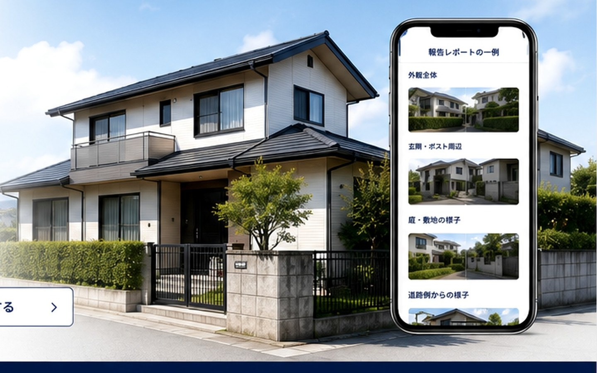

REPORT SAMPLE
報告見本
実案件・実績写真ではなく、報告形式を説明するサンプルです。

サンプル画像
現地確認報告
実施日時：2026年○月○日 10:30
天候：晴れ
確認範囲：道路側外観、玄関周辺、敷地、郵便受け周辺
確認事実：外壁の一部に写真のような表面の変色が見られました。当方では原因、修理の要否または緊急度を判断していません。
未確認：屋根の反対側は地上から見えず、確認していません。
実案件・実績写真ではなく、報告形式を説明するサンプルです。

サンプル画像
実施日時：2026年○月○日 10:30
天候：晴れ
確認範囲：道路側外観、玄関周辺、敷地、郵便受け周辺
確認事実：外壁の一部に写真のような表面の変色が見られました。当方では原因、修理の要否または緊急度を判断していません。
未確認：屋根の反対側は地上から見えず、確認していません。